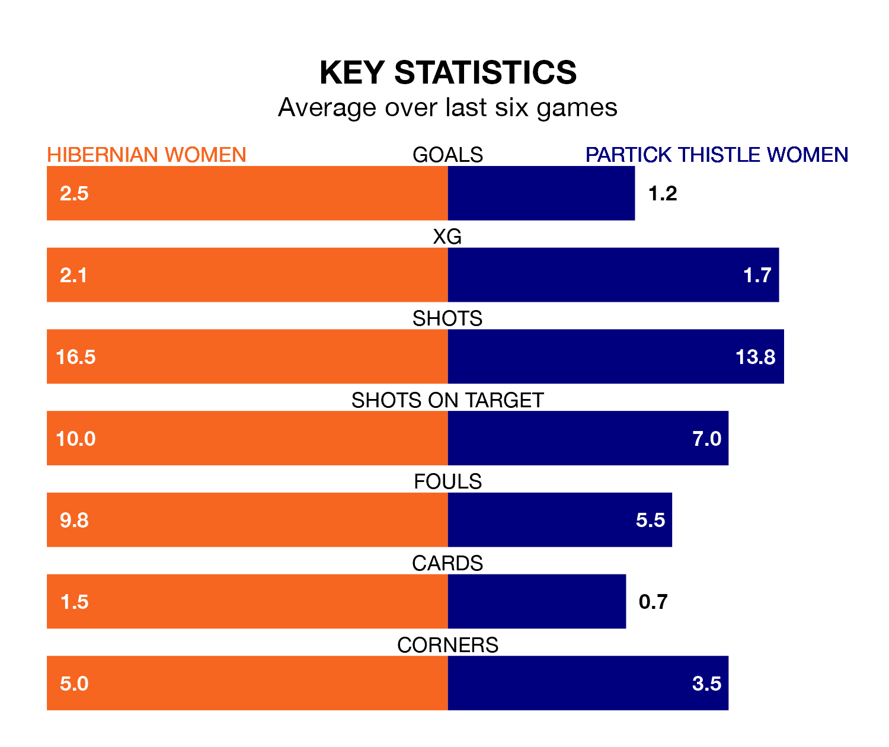

Hibernian Women host Partick Thistle Women on Sunday at the Meadowbank Stadium in SWPL 1.
In their last league match, on March 3, Hibernian lost to Rangers Women 3-0 at home.
Partick Thistle also lost, 6-1 away at Celtic Women, with Cara Henderson scoring their goals.
With 35 goals in 22 games so far this season, Partick Thistle are scoring at below the league average rate with 1.6 goals per game. But they are conceding fewer than average too, letting in 35 goals at a rate of 1.6 per game.
Hibernian, meanwhile, are above average scorers, with 2.7 goals per game, compared to a league average of 2.2. They have conceded 1.5 goals per game.
In Jorian Baucom, Hibs have one of the league's sharpest shooters so far this season. She has notched 20 goals in 22 appearances, to sit second in the scoring charts.
Her goal rate of one every 81 minutes is much quicker than that of Henderson, Thistle's top scorer with a goal every 180 minutes, and a total of 10 goals in 22 games.
In the last 10 years, Hibernian and Partick Thistle have played each other on 10 occasions. Hibernian won five of them, Partick Thistle three, and they drew twice.
On average, Hibs scored 1.5 goals and Thistle 1.0 in those matches.
Their last meeting was on February 18, when they played out a 1-1 draw.
The hosts are fifth in the table after 22 games, of which they have won 12 and drawn three, earning 39 points.
The away side are one place behind Hibernian in sixth, with 12 wins and two draws putting them on 38 points.
Hibernian are in mixed form in SWPL 1, with three wins and a draw from their last six games.
With three wins and two draws over that period, Partick Thistle's form is slightly better – they have taken 11 points from 18, compared to Hibs's 10.
Updated: 09:34 (UTC), 08/03/24